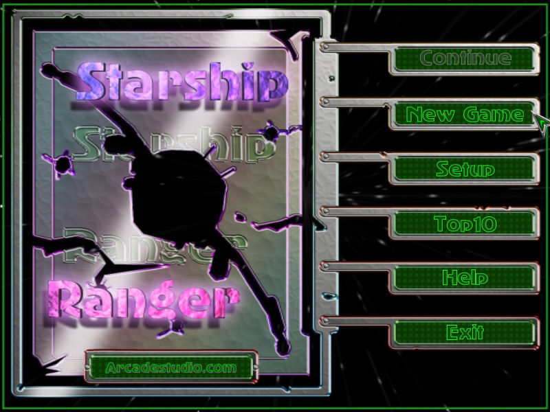
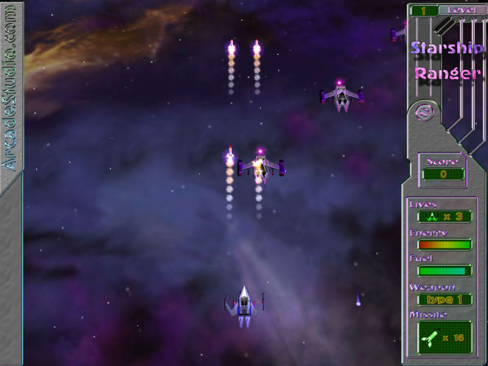

名稱：無敵太空艦隊／星艦遊俠 (Starship Ranger，英文版)
簡介：ArcadeStudio.com出品的垂直捲軸射擊遊戲，出品年份不明，2003年由新造科技代理，
做了一個簡易的中文安裝界面後發行 [待補]。


備註：本版為1.7版（2003年新造科技代理版）
保護：無
備註：VirtualBox無法正常執行，虛擬機請使用VMware。
檔案：starshipsetup173.rar = 1.73版安裝檔（註：最後一版為2008年1.97版，已找不到）